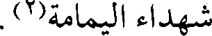
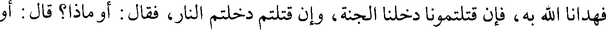
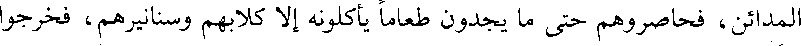
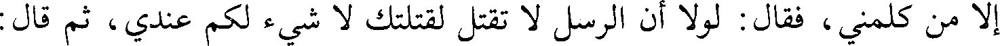

File: 000409.gt.txt (if the image is defective, simply delete all Arabic text and the line will be excluded)

فوجه به إلى البصرة بكتاب عمر، وما زالت البصرة تعظم وتذكر فضائلها، وأهل البصرة
File: 000410.gt.txt (if the image is defective, simply delete all Arabic text and the line will be excluded)

يقولون لنا : الثلاثة عن الثلاثة؛ الرياشي والسجستاني والأخفش عن أبي زيد، وأبي
File: 000411.gt.txt (if the image is defective, simply delete all Arabic text and the line will be excluded)

عبيدة والأصمعي عن أبي عمرو بن العلاء، وعيسى بن عمر ويونس بن حبيب.
File: 000412.gt.txt (if the image is defective, simply delete all Arabic text and the line will be excluded)

وفي هذه السنة، أعني سنة أربع عشرة(1)
File: 000413.gt.txt (if the image is defective, simply delete all Arabic text and the line will be excluded)

حج بالناس عمر بن الخطاب رضي الله عنه، وكان على مكة عتاب بن أسيد،
File: 000414.gt.txt (if the image is defective, simply delete all Arabic text and the line will be excluded)

وعلى اليمن يعلى بن منبه، وعلى الكوفة سعد، وعلى الشام أبو عبيدة بن الجراح،
File: 000415.gt.txt (if the image is defective, simply delete all Arabic text and the line will be excluded)

وعلى البحرين عثمان بن أبي العاص وقيل : بل العلاء بن الحضرمي، وعلى عمان
File: 000416.gt.txt (if the image is defective, simply delete all Arabic text and the line will be excluded)

حذيفة بن محصن.
File: 000417.gt.txt (if the image is defective, simply delete all Arabic text and the line will be excluded)

سنة 14
File: 000418.gt.txt (if the image is defective, simply delete all Arabic text and the line will be excluded)

إلى السكر طلبا التطهير بالحد، وقد كان يكفيهما مجرد الندم، غير أنهما غضبا لله تعالى
File: 000419.gt.txt (if the image is defective, simply delete all Arabic text and the line will be excluded)

على أنفسهما المفرطة، فأسلماها إلى إقامة الحد.
File: 000420.gt.txt (if the image is defective, simply delete all Arabic text and the line will be excluded)

وأما إعادة عمر الضرب فإنما ضربه تأديبا لا حدا.
File: 000421.gt.txt (if the image is defective, simply delete all Arabic text and the line will be excluded)

ذكر من توفي في هذه السنة من الأكابر
File: 000422.gt.txt (if the image is defective, simply delete all Arabic text and the line will be excluded)

173 -الحارث بن قيس بن خالد بن مخلد بن عامر، أبو خالد(1) :
File: 000423.gt.txt (if the image is defective, simply delete all Arabic text and the line will be excluded)

شهد العقبة مع السبعين، وبدرا، والمشاهد كلها مع رسول الله صلعم. وشهد
File: 000424.gt.txt (if the image is defective, simply delete all Arabic text and the line will be excluded)

اليمامة مع خالد بن الوليد، فجرح يومئذ واندمل، ثم انتقض به فمات، فهو يعد من
File: 000425.gt.txt (if the image is defective, simply delete all Arabic text and the line will be excluded)

شهداء اليمامة(2).
File: 000426.gt.txt (if the image is defective, simply delete all Arabic text and the line will be excluded)

174 -زياد بن لبيد بن ثعلبة بن سنان بن عامر بن عدي(3) :
File: 000427.gt.txt (if the image is defective, simply delete all Arabic text and the line will be excluded)

شهد العقبة مع السبعين، وكان لما أسلم يكسر أصنام بني بياضة. وخرج زياد إلى
File: 000428.gt.txt (if the image is defective, simply delete all Arabic text and the line will be excluded)

النبي صلعم / فأقام معه بمكة وهاجر معه إلى المدينة، فهو مهاجري أنصاري، وشهد بدرا 71/أ
File: 000429.gt.txt (if the image is defective, simply delete all Arabic text and the line will be excluded)

والمشاهد كلها مع رسول الله صلعم. وتوفي رسول الله صلعم، وهو عامله على حضرموت،
File: 000430.gt.txt (if the image is defective, simply delete all Arabic text and the line will be excluded)

وولي قتال أهل الردة باليمن حين ارتد أهل البحرين مع الأشعث بن قيس فظفر بهم فقتل
File: 000431.gt.txt (if the image is defective, simply delete all Arabic text and the line will be excluded)

من قتل وأسر من أسر، وبعث بالأشعث بن قيس إلى أبي بكر في وثاق.
File: 000432.gt.txt (if the image is defective, simply delete all Arabic text and the line will be excluded)

175-[سلمة بن أسلم(4):
File: 000433.gt.txt (if the image is defective, simply delete all Arabic text and the line will be excluded)

شهد بدرا والمشاهد كلها مع رسول الله صلعم، وقتل بالعراق يوم جسر أبي عبيد
File: 000434.gt.txt (if the image is defective, simply delete all Arabic text and the line will be excluded)

الثقفي وهو ابن ثلاث وستين سنة.
File: 000436.gt.txt (if the image is defective, simply delete all Arabic text and the line will be excluded)

سعد أنه لا بد لكم منا، ولا سلاح معكم، فما جاء بكم؟ وكانوا يضحكون منهم ومن
File: 000437.gt.txt (if the image is defective, simply delete all Arabic text and the line will be excluded)

نبلهم، ويقولون هذه مغازل. فلما أبوا أن يرجعوا عن حربهم، قالوا لهم : ابعثوا لنا رجلا
File: 000438.gt.txt (if the image is defective, simply delete all Arabic text and the line will be excluded)

منكم عاقلا يبين لنا ما جاء بكم، فقال المغيرة بن شعبة : أنا، فعبر إليهم، فقعد مع رستم
File: 000439.gt.txt (if the image is defective, simply delete all Arabic text and the line will be excluded)

على السرير، فصاحوا عليه، فقال : إن هذا لم يزدني رفعة ولم ينقص صاحبكم، فقال
File: 000440.gt.txt (if the image is defective, simply delete all Arabic text and the line will be excluded)

رستم : صدق، ثم قال : ما جاء بكم؟ فقال : إنا كنا قوما في ضلالة، فبعث الله فينا نبيا
File: 000441.gt.txt (if the image is defective, simply delete all Arabic text and the line will be excluded)

فهدانا الله به، فإن قتلتمونا دخلنا الجنة، وإن قتلتم دخلتم النار، فقال : أو ماذا؟ قال : أو
File: 000442.gt.txt (if the image is defective, simply delete all Arabic text and the line will be excluded)

تؤدون الجزية، فلما سمعوا نخروا وصاحوا، وقالوا : لا صلح بيننا وبينكم، فقال
File: 000443.gt.txt (if the image is defective, simply delete all Arabic text and the line will be excluded)

المغيرة : تعبرون إلينا أو نعبر إليكم؟ فقال رستم : بل نعبر إليكم، فاستأخر المسلمون
File: 000444.gt.txt (if the image is defective, simply delete all Arabic text and the line will be excluded)

حتى عبر منهم من عبر / فحملوا عليهم فهزموهم، فأصاب المسلمون فيما أصابوا جرابا 61/أ
File: 000445.gt.txt (if the image is defective, simply delete all Arabic text and the line will be excluded)

من كافور فحسبوه ملحا، فألقوا منه في الطبيخ، فلما ذاقوه قالوا : لا خير في هذا.
File: 000446.gt.txt (if the image is defective, simply delete all Arabic text and the line will be excluded)

وانهزم القوم حتى انتهوا إلى الصراة، فطلبوهم فانهزموا حتى انتهوا إلى المدائن،
File: 000447.gt.txt (if the image is defective, simply delete all Arabic text and the line will be excluded)

ثم انهزموا حتى أتوا شاطئ دجلة(1)، فمنهم من عبر من كلواذى، ومنهم من عبر من أسفل
File: 000448.gt.txt (if the image is defective, simply delete all Arabic text and the line will be excluded)

المدائن، فحاصروهم حتى ما يجدون طعاما يأكلونه إلا كلابهم وسنانيرهم، فخرجوا
File: 000449.gt.txt (if the image is defective, simply delete all Arabic text and the line will be excluded)

ليلا فلحقوا بجلولاء، فأتاهم المسلمون؛ وعلى مقدمة سعد هاشم بن عتبة، وهي
File: 000450.gt.txt (if the image is defective, simply delete all Arabic text and the line will be excluded)

الوقعة التي كانت، فهزم المشركون حتى ألحقهم سعد بنهاوند.
File: 000451.gt.txt (if the image is defective, simply delete all Arabic text and the line will be excluded)

وبعث سعد بجماعة من المسلمين إلى يزدجرد يدعونه إلى الإسلام، فلما دخلوا
File: 000452.gt.txt (if the image is defective, simply delete all Arabic text and the line will be excluded)

عليه، قال : ما الذي دعاكم إلى غزونا، والولوع ببلادنا، فقال له النعمان بن مقرن : إن
File: 000453.gt.txt (if the image is defective, simply delete all Arabic text and the line will be excluded)

الله تعالى أرسل إلينا رسولا يدلنا على الخير، فأمرنا أن ندعو الناس إلى الإنصاف،
File: 000454.gt.txt (if the image is defective, simply delete all Arabic text and the line will be excluded)

ونحن ندعوكم إلى ديننا، فإن أبيتم فالمناجزة، فقال يزدجرد : إني لا أعلم في الأرض
File: 000455.gt.txt (if the image is defective, simply delete all Arabic text and the line will be excluded)

أمة أشقى منكم، فقال المغيرة بن زرارة الأسدي : اختر إن شئت الجزية عن يد وأنت
File: 000456.gt.txt (if the image is defective, simply delete all Arabic text and the line will be excluded)

صاغر، وإن شئت السيف، أو تسلم، فقال : أتستقبلني بمثل هذا؟ فقال : ما استقبلت
File: 000457.gt.txt (if the image is defective, simply delete all Arabic text and the line will be excluded)

إلا من كلمني ، فقال : لولا أن الرسل لا تقتل لقتلتك لا شيء لكم عندي، ثم قال :
File: 000458.gt.txt (if the image is defective, simply delete all Arabic text and the line will be excluded)

ائتوني بوقر من تراب واحملوه على أشرف هؤلاء، ثم سوقوه حتى يخرج من باب
File: 000459.gt.txt (if the image is defective, simply delete all Arabic text and the line will be excluded)

المدائن(2)، ارجعوا إلى صاحبكم فاعلموه أني مرسل إليهم رستم حتى يدفنه(3) وجنده